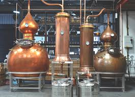
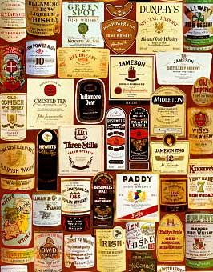

Irish whiskey – Ирландско уиски
 Ирландското уиски се изписва whiskey, с една буква разлика от шотландското whisky (виж повече тук). Съперничеството между двата вида продължава около 6 века, но днес ирландкото заема много скромен дял на световния пазар, в сравнение с шотландското. Принципните разлики при ирландското уиски са, че малцът не се опушва с торф. Малцираният ечемик се изсушава обикновено с въглища или дори с торф, но пушекът не се допуска до зърното. Затова в ирландското отсъства торфеният и димен аромат и вкус, а преобладава ечемиченият (малцовият). (Изключение е марката Connemara, което е торфено). Друга особеност е, че при ирландското не целият ечемик, който се използва като суровина за уиски, е малциран. Малцът е смесен с немалциран ечемик. Още една разлика, която обикновено се изтъква, е, че ирландското е тройно дестилирано, а шотландското – двойно. Но това е относително, защото и в Шотландия в някои дестилационни има тройна дестилация, а на повечето казаните за дестлиране са свързани в особена система и преваряването е многократно. От друга страна и в Ирландия има изключения от тройното дестилиране. Ирландските казани за дестилация по традиция са по-големи от шотландските. В съвременните ирландски уискита се използва смес от дестилати от традиционни казани и от високи колони за дестилация. Стандартното ирландско уиски е бленд от малцови и зърнени дестилати. Ирландците изтъкват, че шотландците наблягат на “блендирането” (blending), получават вкуса от смесване на дестилати, докато те наблягали на технологията и процеса на дестилация, за вкуса и аромата. Националните регулации за ирландско уиски (признати и международно), са подобни на шотландските: да е дестилирано и отлежало в Ирландия; да е дестилирано до не повече от 94,8% алкохолно съдържание; да е дестилирано от зърнена каша, със съдържане на малц и естествени суровини; да е отлежало най-малко 3 години. И ирландските дестилати като шотландските отлежават в употребявани бъчви от шери, бърбън и др. Изискванията за “бленд” са същите, в регулациите няма обособени изисквания за single malt и single grain. Но има специфичен вид ирландско уиски – Pot Still Irish Whiskey, сварено само в традиционни казани за дестилация, в по-малки партиди, без смесване с дестилати от високи дестилационни колони. За него се използва суровина или само от малц, или смес от покълнал и непокълнал ечемик. В Ирландия е имало към 2000 дестилационни за уиски през последните 150 години, повечето от които незаконни, но постепенно са закрити (най-много при Сухия режим в САЩ след 1919 г.). Днес са уедрени и са останали само 4 големи дестилационни (за сравнение в Шотландия са около 120 по-големи). В Ирландия е практика различни марки, включително независими, да се произвеждат (“на ишлеме”) в една и съща дестилационна. Четирите големи в Ирландия са: Old Bushmills Distillery, където се произвежда едноименното уиски, в различните му разновидности; New Midleton Distillery, където се произвеждат Jamesons, Powers, Paddy, Midleton, Redbreast и др., плюс независимата марка Green Spot; Cooley Distillery, където се произвежда Connemara, Michael Collins, Tyrconnell и др.; Kilbeggan Distillery, отворена отново през 2007 г., досега пускала само проби от с отлежали по 2-3 години дестилати. Най-популярното у нас ирландско уиски Tullamore Dew (“Тюламор Дю”), е независима марка, която се произвежда в Cork Distillers Co., част от New Midleton Distillery. След “Джеймисън” (Jameson), Tullamore Dew e второто най-продавано ирландско уиски по света.